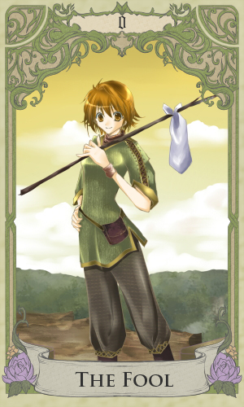

| Ｏ：愚者『神宿八百万』 | |
|
 |
Ｏ：愚者 正位置： ０からの出発・積極性がきめ手・可能性・思い切って行動する 逆位置： 間違った方向に進む・気まぐれ・現実逃避・無計画・軽率な態度 ◆ 神宿 八百万 ◆ 私立黎萌学園１年。平均並みの身長で多少伸びた髪を後ろに纏めひとつにしている。 髪をまとめてはいるが、父親似とよく言われる事からも分かる様に誰がどう見ても男子。 憑かれた相手になる変異霊媒体質であるが、少なくとも私立黎萌学園に入学するまでは発現しなかった為に自分の体質に気付いていない。 タイトルで行くと主人公のハズだがどうも影が薄くなりそうなのは気のせいか？ ちなみに可愛い物好き。取り敢えずかわいい物好き。とにかくかぁいいもの好き。 ※登場作：ヤオヨロヅ物語 「分かった。じゃあ、こっちもヤオマでいいよ」  イラスト：高野透さん |